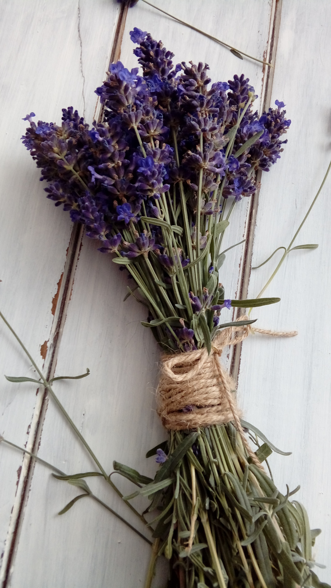
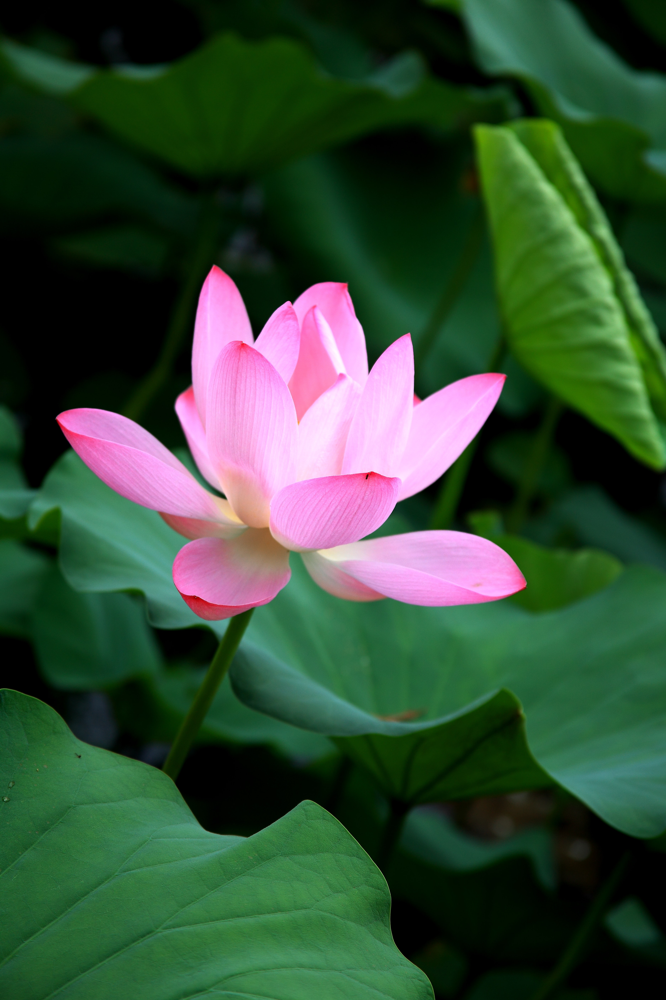
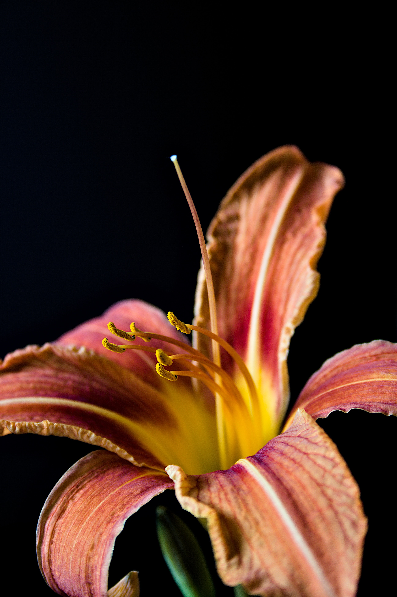

Interesting Facts

You can eat some flowers like: Roses, Daylilies, and lavender

In some parts of the world lotus flowers were used to help treat diarrhea, inflammation, and homeostasis

Sunflowers are beautiful plants that can contain as 1000 to 2000 seeds in just one plant./p>

There are over 80,000 varieties of daylilies. That is a lot of daylily varieties!